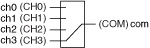

The following figure represents the NI PXI-2591 in the 4×1 multiplexer topology.
|  |
|
In this topology, you can connect channels by calling the niSwitch Connect Channels VI or the niSwitch_Connect function.
To connect the CHx terminal to the COM terminal, disconnect the previously connected terminal from the COM.
For example, to connect CH2 to COM after connecting CH1 to COM, use the following code:
niSwitch_Disconnect(vi, "ch1", "com")
niSwitch_Connect(vi, "ch2", "com")
 |
Note For an initial connection, you do not need to disconnect the default channel (ch3) from COM after the module has been reset or a call to the niSwitch Disconnect All Channels VI or the niSwitch_DisconnectAll function has been made. |
|
Note niSwitch_Disconnect(vi, "ch1", "com") does not activate the relay until the niSwitch_Connect(vi, "ch2", "com") is executed. One channel of the 4x1 multiplexer is always connected to the common channel. |
When scanning the NI PXI-2591, a typical scan list entry could be ch1->com;. This entry routes the signal connected to CH1 to COM.